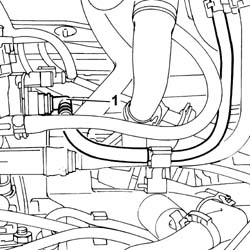
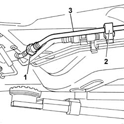

1080E62 pipe from fuel vapour separator to solenoid - r r
- Path
- Procedures > 10 ENGINE UNIT > 1080 EXHAUST EMISSION CONTROL SYSTEM > 1080E evaporation control system > 1080E62 pipe from fuel vapour separator to solenoid - r r
- Kind
- repair procedure (removal / refitting; the operation number is the code)
- Applies to
- engines: 1.1, 1.2 8v; all production periods
- Interactive page
- https://sloeber94.github.io/elrnDB-fPnd/en/#/2752525
Applies to: engines: 1.1; all production periods
 Removing
Removing
 Refitting
Refitting1048A10 air cleaner filtering element - replace
1. Disconnect the connector from the vapour enablement solenoid valve.

Applies to: engines: 1.2 8v; all production periods
Removing
Refitting1048A10 air cleaner filtering element - replace
1. Disconnect the connector from the fuel vapour enablement solenoid.
Applies to: engines: 1.1; all production periods
1040E22 fuel pipe protection - r r
1. Disconnect the rapid attachment for the fuel vapour pipe.
2. Release the pipe from the fastening clips.
3. Remove the fuel vapour pipe.

Applies to: engines: 1.2 8v; all production periods
1040E22 fuel pipe protection - r r
1. Disconnect the rapid attachment for the fuel vapour pipe.
2. Release the pipe from the fastening clips.
3. Remove the fuel vapour pipe.
Applies to: engines: 1.1; all production periods
Refitting
RemovingFit the pipe in place.
Connect the rapid connector for the fuel vapour pipe to the fuel tank side connector.
Secure the pipe to the fastening clips.
1040E22 fuel pipe protection - r r
Connect the rapid connector to the single fuel manifold pipe.
Applies to: engines: 1.2 8v; all production periods
Refitting
RemovingFit the pipe in place.
Connect the rapid connector for the fuel vapour pipe to the fuel tank side connector.
Secure the pipe to the fastening clips.
1040E22 fuel pipe protection - r r
Connect the rapid connector to the single manifold manifold pipe.